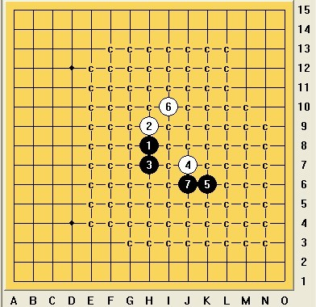

爱伏，，，，演示一下
首页
五子棋交流
#1 爱伏，，，，演示一下 作者：^版徒 发表时间：2013-10-2 16:31:22
你先开始
#2 Re:爱伏，，，，演示一下 作者：屏蔽 发表时间：2013-10-2 16:52:11
目测太监
#3 Re:爱伏，，，，演示一下 作者：欧艾沃 发表时间：2013-10-2 16:55:40
=======上图对应的爱五子棋谱代码如下，以便你拆解：========
h8h9h7
======================================================
#4 Re:爱伏，，，，演示一下 作者：^版徒 发表时间：2013-10-2 16:58:08
我交换
#5 Re:爱伏，，，，演示一下 作者：欧艾沃 发表时间：2013-10-2 17:00:43
[iwzq]h8h9h7j7/iwzq]
=======上图对应的爱五子棋谱代码如下，以便你拆解：========
h8h9h7j7
======================================================
7打
#6 Re:爱伏，，，，演示一下 作者：欧艾沃 发表时间：2013-10-2 17:02:25
[iwzq]h8h9h7j7iwzq]
=======上图对应的爱五子棋谱代码如下，以便你拆解：========
h8h9h7j7
======================================================
7打
#7 Re:爱伏，，，，演示一下 作者：欧艾沃 发表时间：2013-10-2 17:03:07
iwzq]h8h9h7j7[/iwzq]
=======上图对应的爱五子棋谱代码如下，以便你拆解：========
h8h9h7j7
======================================================
7打
#8 Re:爱伏，，，，演示一下 作者：欧艾沃 发表时间：2013-10-2 17:03:44
=======上图对应的爱五子棋谱代码如下，以便你拆解：========
h8h9h7j7
======================================================
7打
#9 Re:爱伏，，，，演示一下 作者：^版徒 发表时间：2013-10-2 17:05:34
我是不是又可以交换?
如果我现在交换,我是拿黑还是拿白?
#10 Re:爱伏，，，，演示一下 作者：欧艾沃 发表时间：2013-10-2 17:09:23
你可以再一次交换，交换的话，你拿白。
#11 Re:爱伏，，，，演示一下 作者：^版徒 发表时间：2013-10-2 17:17:36
请问一下,
如果这种情况,
是不是黑可以叫出200打?
或者,你们对白四或黑五有什么限制吗?
#12 Re:爱伏，，，，演示一下 作者：欧艾沃 发表时间：2013-10-2 17:32:29
不可以。规则的名字是Soosyrv-七所以最多是七打。还有第4可以下只在七*七平方。
#13 Re:爱伏，，，，演示一下 作者：^版徒 发表时间：2013-10-2 17:39:31
明白了,那么目前溪月山口规则下的强四属于自杀.....
#14 Re:爱伏，，，，演示一下 作者：^版徒 发表时间：2013-10-2 17:40:53
没有打错吧
#15 Re:爱伏，，，，演示一下 作者：欧艾沃 发表时间：2013-10-2 19:40:20
=======上图对应的爱五子棋谱代码如下，以便你拆解：========
h8h9h7j7k6i10
======================================================
#16 Re:爱伏，，，，演示一下 作者：^版徒 发表时间：2013-10-2 20:55:32
